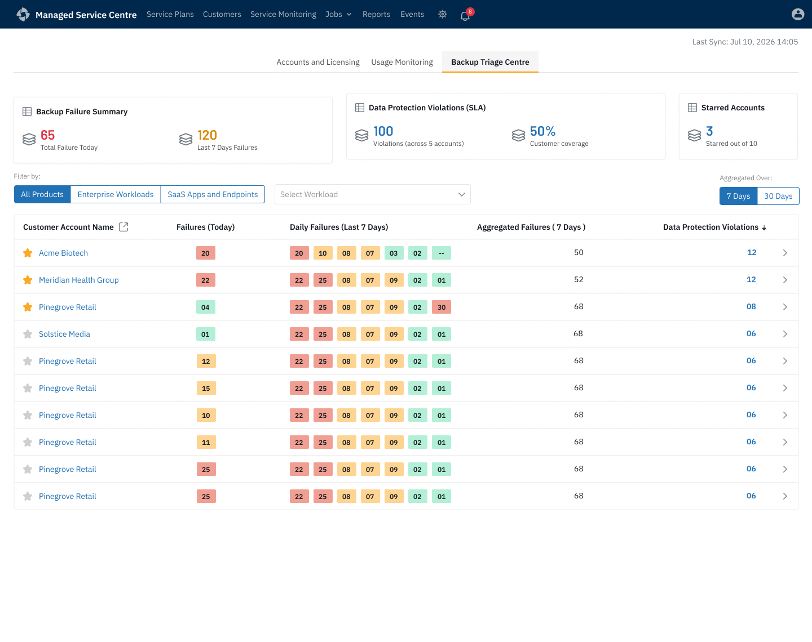
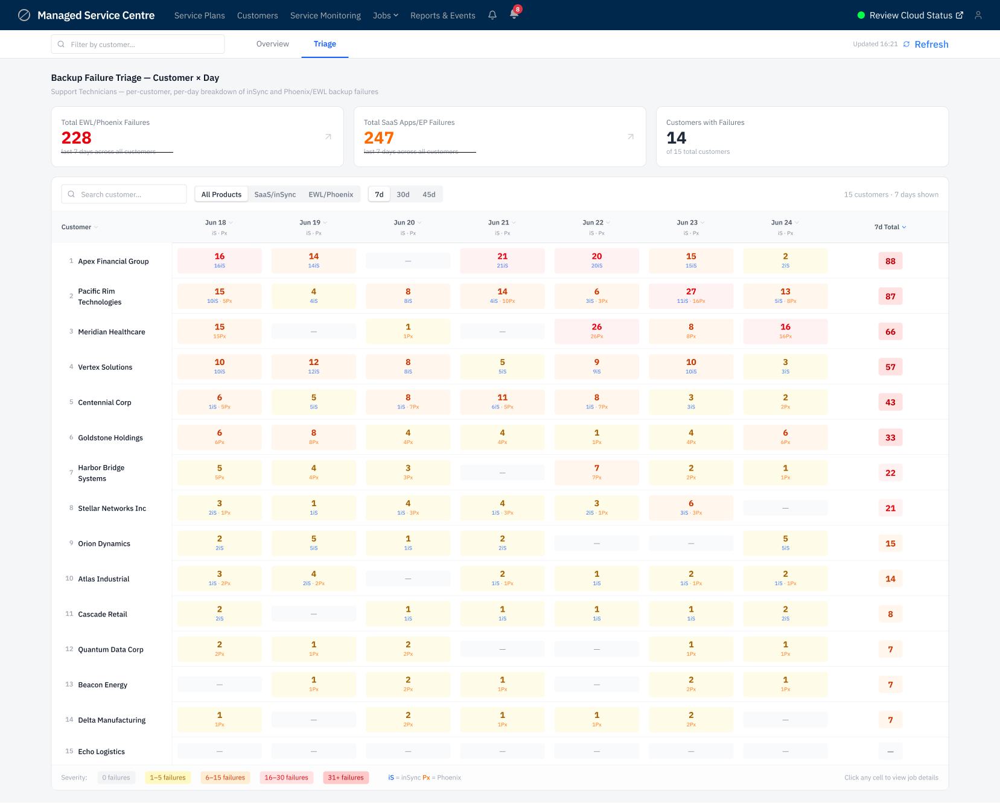
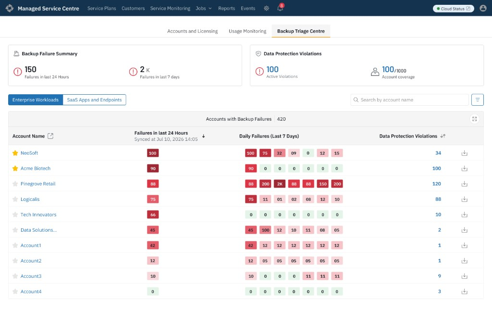

Case Study · 01
Hundreds of customers.
One control room.
Designing a new home screen for Druva's Managed Service Providers (MSPs). The goal was to build a single page showing backup problems, storage usage, expiring licenses, and security risks across all their clients—eliminating the need to check each customer individually.

Project Context
What is MSP?
A Managed Service Provider — a partner company that manages backup, security, and IT operations on behalf of multiple end-customers, rather than each customer managing it themselves.
What is MSC?
Druva's Managed Services Center — the operational portal MSPs use to monitor and manage backup health, licensing, and security posture across every customer they support, from a single login.
What does this project solve?
MSPs were checking each customer account individually to spot backup failures, storage spikes, expiring licenses, and security risks. This project replaces that fragmented workflow with one consolidated operational dashboard — a single home screen that surfaces what needs attention across every client at once.
Target Persona
Alex, The IT Operations Admin
Alex manages backups, customer accounts, and security for the MSP across every client they support—all from one login.
- What Alex Needs: A single "bird's-eye view" of all 100 client companies at once, highlighting only the ones with errors or expiring contracts.
- Why it matters: Every extra click scales across hundreds of managed tenants. If Alex misses a failed backup because it was hidden inside a separate account window, the client loses critical data, and the MSP risks losing their contract.
The Ultimate Constraint: Role-Based Access
Different types of users require different data views on the exact same screen architecture. If a user doesn't have permissions, the layout cannot look broken or empty.
| Component | Full Admin | Limited Admin |
|---|---|---|
| Dashboard View | Sees data for every customer | Only sees their assigned customers |
| Failure Triage | Can view and fix issues for any customer | Can only fix their assigned customers |
| Security Widget | Can see and dismiss security risks | Cannot see this section at all |
| License View | Sees license data for all customers | Sees license data for their own customers only |
Step 01 / Information Architecture
Mapping the data before drawing the UI
The PRD had multiple sets of information, and some of it collided — the same data pulling toward different places. Before opening Figma, I mapped every piece the system generated into one master tree, so I could see clearly which information belonged in which bucket.

Putting every metric on a visual map forced hard conversations early. We reviewed this map with internal Customer Success teams to ensure we weren't missing blind spots. It stopped subjective arguments about "how a chart should look" and forced us to debate "does the user actually need this number?"
The 4 Daily Workflows
Reviewing the map against how admins actually described their day surfaced four distinct workflows, each operating on a different timeline:
- Immediate Triage: "Which customer backups require attention this morning?"
- Daily Monitoring: "Is anyone using an abnormal amount of storage today?"
- Weekly Planning: "Which client trials or contracts expire this week?"
- Periodic Auditing: "Are our own admin accounts safe and secure?"
Step 02 / Spatial Structure
Structure test — low-fidelity hierarchy pass
I first plotted the information into dashboard sections with no real data or charts — just blocks. Stripping out the numbers made it easy to decide what to prioritise, what to push down, and which section should hold which information.

We paused layout exploration here and reviewed the concepts against the four workflows identified earlier. One pattern kept surfacing: every layout forced unrelated jobs into the same visual hierarchy. If we stacked everything, an admin checking expirations had to scroll past massive storage charts. The structure needed a real test with real data before we committed.
Step 03 / Iteration & Failure
Proving it in high fidelity
We moved into high-fidelity design to see how real data would feel. Running these full screens past engineering and PMs made the friction between different administrative tasks impossible to ignore.
Scrapped 01 — The Overloaded View

Our first attempt put Usage Charts, Licensing States, Account Lifecycles, and Active Tickets together on a single screen.
What went wrong: In review, the licensing widgets kept getting skipped—the storage charts dominated the page. Combining monitoring and account management created competing priorities.Scrapped 02 — The Half-Measure

We cleaned up the layout by grouping Account Summaries, Workloads, and Security neatly at the top.
Realization: The top half worked perfectly for account management. But analyzing consumption is a dedicated job. Keeping heavy Usage charts at the bottom felt out of place. It required its own room.Step 04 / Simplification
Stripping it back to five minimal categories
After the failed high-fidelity passes, we stepped back. Instead of charts and filters, we rebuilt the dashboard as five plain category blocks—each answering one question, with no decorative UI noise.

Reviewing this layout against the four daily workflows made the next decision obvious. These five categories did not belong on one scroll. Account and licensing work (Categories 1–3), consumption monitoring (Category 5), and security auditing (Category 4) operate on different timelines and mental modes.
That review is what led directly to the three-tab structure—each tab inheriting the categories that share the same job-to-be-done.
Tab 01
Accounts & Licensing
Customer Accounts, Tenant Visibility, Product Modules, Security Posture, and active Support Cases.
Tab 02
Usage Monitoring
Usage trends, quota alerts, and storage consumption (Category 5).
Tab 03
Backup Triage
Immediate failure triage—the morning workflow that needed its own room.
Step 05 / The Shipped Solution
Dividing the noise: 3 tabs for 3 distinct jobs
The five-category map became three dedicated tabs. Each one inherited only the blocks that belong to the same operational question—no more scrolling past unrelated charts to reach the job you came for.
Tab 01 — Accounts & Licensing
Question: Which customers need commercial attention today?


Tab 02 — Usage Monitoring
Question: Which tenants are consuming resources abnormally?


Known tradeoff in the shipped design
Per-product numbers live inside the hover tooltip rather than as separate cards. It keeps the chart scannable, but it means an admin can't compare two products side by side without moving the mouse twice. Acceptable for spotting the one line that moved—wrong if the job ever shifts to detailed comparison.
Tab 03 — Backup Triage Centre
Question: Which customer backups require attention this morning?
Step 06 / Iteration Evolution
Evolving the Triage Table
How the Backup Triage Centre's per-customer failure table evolved through three design passes before shipping.
Iteration 1 — Single filtered table

The first version was a single table filtered by a workload dropdown, showing failure counts for the last 7 and 30 days. It worked for one workload at a time, but a technician had to actively switch the filter before triaging, and there was no way to see Enterprise Workloads and SaaS/Endpoint failures together.
Iteration 2 — Combined Customer × Day matrix

The second pass rebuilt this as a true per-day heat map — customers as rows, days as columns, severity-coded cells — with a toggle for product and time range. This solved the at-a-glance scanning problem, but merged Enterprise Workloads (Phoenix) and SaaS/Endpoints (inSync) into the same cell, each with its own sync cadence. A day's combined total wasn't a true apples-to-apples number, and spotting which product family drove a spike meant reading small sub-labels inside every cell — defeating the point of a heat map built for scanning.
Iteration 3 — Split into independent workload tabs (shipped)

The shipped version splits Enterprise Workloads and SaaS Apps & Endpoints into two persistent, one-click toggle tabs, each with its own full table and sync timestamp. This removed the false equivalence between two differently-timed data sources, kept switching faster than the Iteration 1 dropdown, and preserved the same star/pin treatment for important customers in both tabs.
Outcomes & Reflection
Key takeaways from the project
01 · Sequence first
Map information architecture before UI. Every screen had a validated purpose before visual design started.
02 · Split mental modes
Daily triage and slow analysis are different jobs. Tabs separated them and cut context switching.
03 · Tabs trade visibility
Three tabs fixed crowding, but cross-cutting alerts scatter. Tab badges are the likely next step.